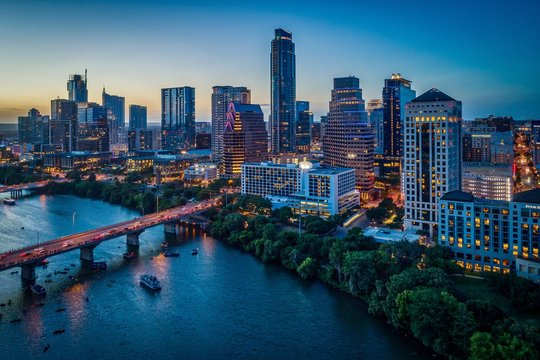

Welcome to Austin, the capitol of Texas. Austin is the host to live music, tech innovation, and natural beauty where they "Keep Austin Weird!"
Austin is the capital of Texas and one of the fastest-growing cities in the country. Austing is known for its live music scene, outdoor activities, and tech startups. The city is also referred to as the "Live Music Capital of the World" where it hosts the famous South by Southwest (SXSW) festival.
| Population | Year Incorporated | Region | City Type | Average Income |
|---|---|---|---|---|
| 950,000 | 1839 | Central Texas | Urban | $75,000 |
| source: https://en.wikipedia.org/wiki/Texas | ||||